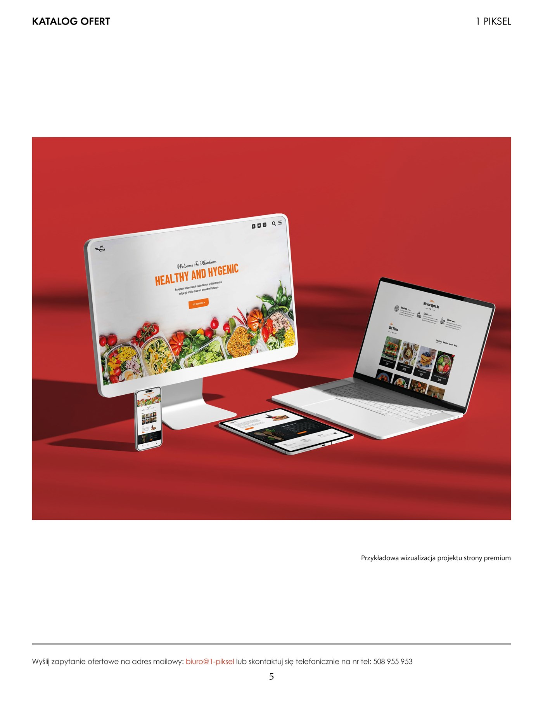
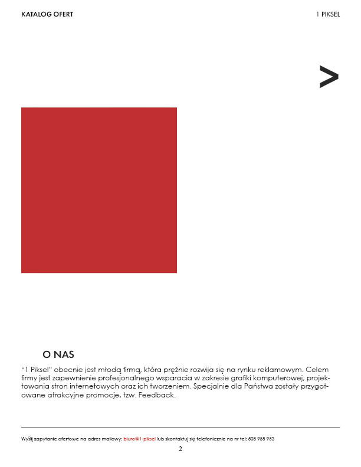
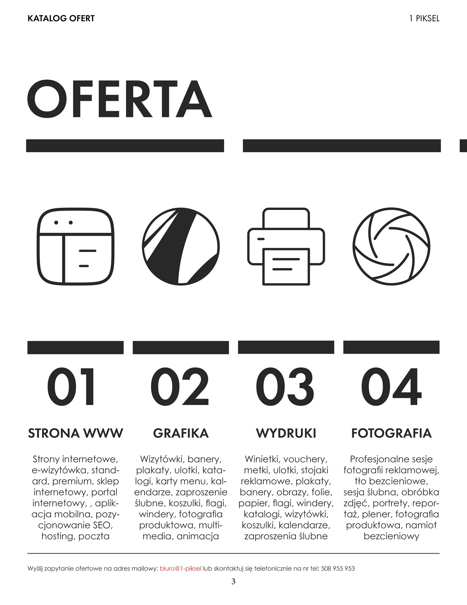
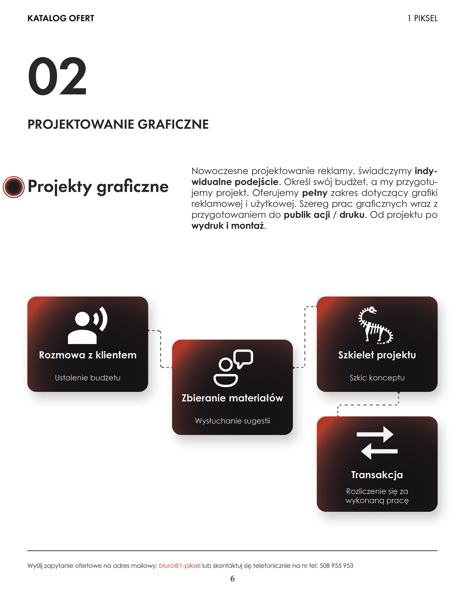
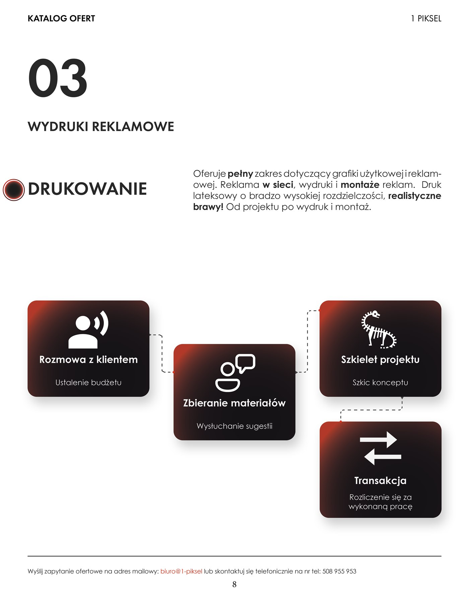
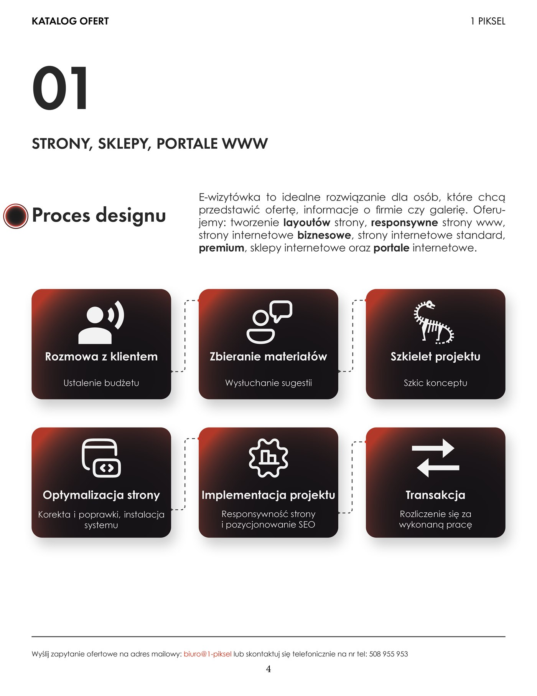
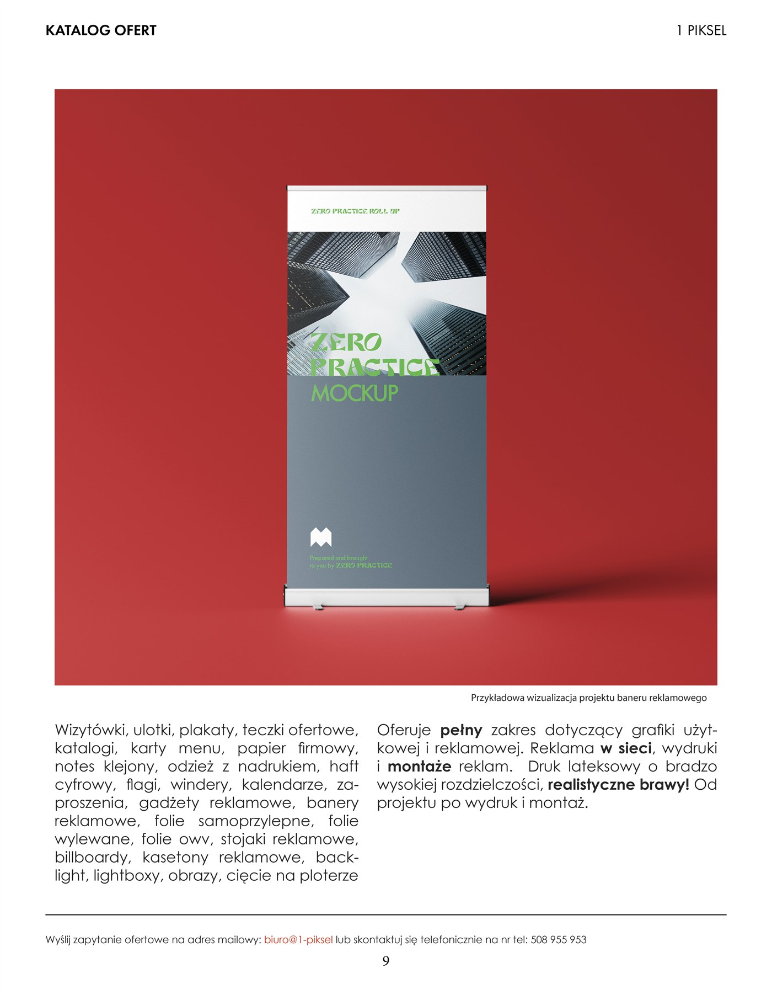
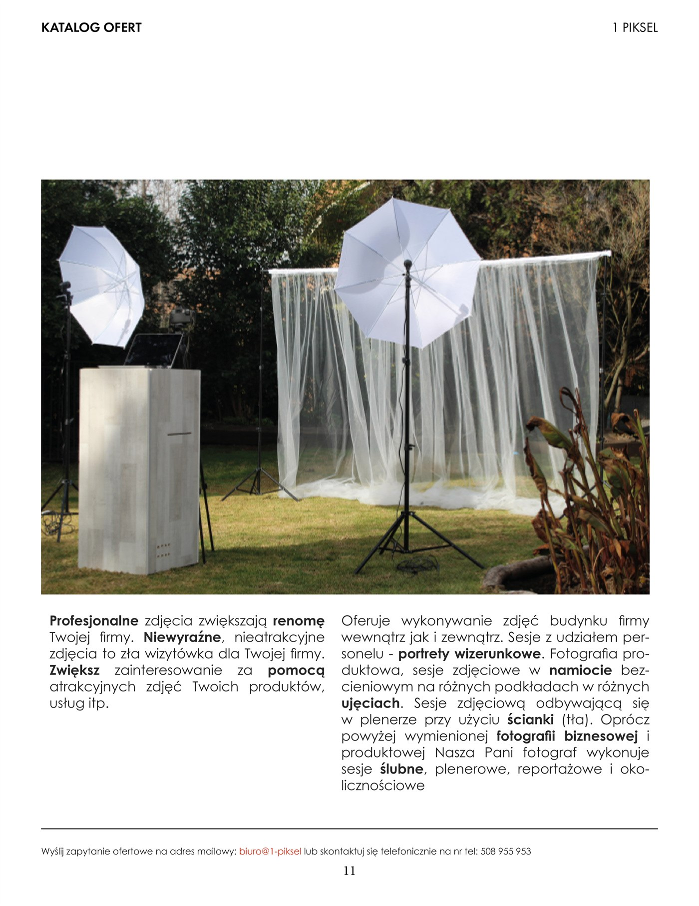

Transforming a fragmented agency service portfolio into an authoritative, 11-page publication system. From an uncompromising modular grid to physical digital print and large-format displays, an instrument designed to build executive trust and accelerate enterprise deals.
“A B2B catalogue is not an advertising brochure, but an architecture of trust. Corporate clients must grasp the workflow, perceive the craft, and decide on collaboration in mere moments.”
Alex Grubba, Creative DirectionStudio 1 Piksel is an expanding creative studio operating across four primary disciplines: web design, branding, large-format printing, and commercial photography. However, previous sales touchpoints lacked cohesive presentation, hindering cross-selling and diminishing perceived engagement value.
The mission was to engineer a physical, uncompromising sales catalogue that instantaneously closes the gap between the agency and enterprise decision-makers. Beyond itemizing fees, the document educates stakeholders, clarifies process complexity, and positions the studio as an indispensable strategic advisor.
The core design challenge lay in unifying four disparate technical workflows under a single, rigorous aesthetic standard. From software code to outdoor location photography, every service had to project belonging to the exact same mature production engine.




A calculated reduction to charcoal black and unprinted paper white electrified by a decisive vermilion accent (#B23929). Red is never arbitrary decoration, serving as a functional navigational focal point guiding scrutiny toward deliverables and key pricing tiers.
Futura embodies Bauhaus geometric purity and modernist clarity. Architectural headline weight contrasted with open, tracked body copy lends the document the authority of an elite international business journal.

Process matrices represent the intellectual core of the system. Each of the four departments adopts an identical phased workflow: from brief, through prototyping, to release. This structural consistency imparts reliability and predictable investment milestones.
Presenting pages in their natural habitat: full, two-page spreads scaled at true A4/A3 proportions, revealing authentic paper geometry, typographic pacing, and tangible real-world execution without arbitrary cropping.


A B2B catalogue is a commercial transaction tool. Relentless typographic hierarchy, explicit project phases, and unambiguous package pricing demystify the offering and guide clients straight to engagement.
Applying an identical process framework across all four departments signals institutional maturity. Structural consistency establishes undeniable respect and communicates repeatable quality.
In a commercial landscape cluttered with noisy collateral, deliberate breathing room and generous margins immediately signal premium tier positioning. Designed negative space communicates quiet confidence.